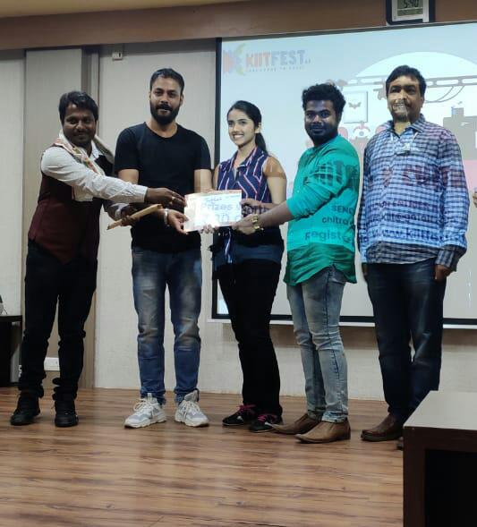

Projects
Above is a glimpse of Day 1 where I received a first hand exciting experience of exploring the facilities of 24×7 news channel. The equipment I learned and used were mojo, GoPro, yellow box & gamble. This helped me bring out my teamwork and public speaking skills.
Day 2:
: I explored anchoring, reporting and multi-camera heading.
Day 3:
Me and my teammates created and participated in a talk show using a multi-camera setup where I learned the basic of angles and recording using multi cameras. I got a first hand experience of working in the PCR room in along with the web developing using HTML.
Passion For Photography
Photography is a story that one fails to put in words. It is a getaway medium
for my personal artistic interests as itbrings out my self expression of the
surroundings which I perceive. Photography motivates me to travel places and
capture a moment which I want to relive and cherish for years to come.
Setu - A bridge that Connects
'SETU' won the national award in CEMCA Community Radio Video Challenge, 2020 in collaboration with UNESCO. Played lead role in the short film which bagged the special recognition award in National Student Film Competition. This short movie helped me develop my creativity and emotional intelligence skills by experiencing the first hand difficulties a common village woman might face in her life.
Research Process - Dhauli Shanti Stupa
The visit at Dhauli Shanti Stupa as a part of the media and communication. This first hand experience to capture the
National Heritage enhanced my views on social background of the people involved in keeping the centuries of culture and
traditions alive. It helped me develop better communication, research and creativity skills by getting to know about the
local Buddhists and their day to day experience
OCCULT
With all the dignitaries from Odia film industry. I won the first prize with prize amount of 30,000 Rupees in the
category of best short film. My movie 'OCCULT' screened at the KIIT fest 6.0, CHITRA V CHITRA -17/12/2019. Since I was
one of the scriptwriters, it brought out my writing and decision making skills

Hands on experience in the teaching learning process
First field trip to the Kalarabank village, Odisha. I got to interact with the residentials of the smart village to
understand social-culture phenomenon. I interacted with the localite and gained knowledge about the experiences of rural
community who are building upon the existing strengths and assets through creative solutions, embracing innovation to
create attractive and sustainable places in which to live and work. This helped me develop interpersonal communication
skills and adaptability to the situations.